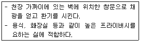
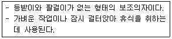
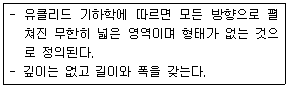
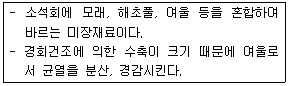
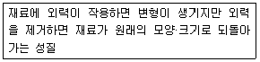
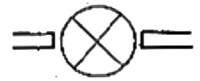
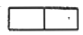
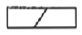
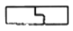

실내건축기능사 (2011-07-31 기출문제)
1과목: 실내디자인
1. 다음 중 공간이 지나치게 넓은 경우 공간을 아늑하고 안정감 있게 보이게 하는 방법으로 가장 알맞은 것은?
- 창이나 문 등의 개구부를 크게 한다.
- 키가 큰 가구를 이용하여 공간을 분할한다.
- 유리나 플라스틱으로 된 가구를 이용하여 시선이 차단되지 않게 한다.
- 난색보다는 한색을 사용하고, 조명으로 천장이나 바닥 부분을 밝게 한다.
(정답률: 74%)

2. 다음 설명에 알맞은 창의 종류는?

- 베이 윈도우
- 윈도우 휠
- 측창
- 고창
(정답률: 79%)
3. 다음 같은 특징을 갖는 의자의 유형은?

- 스툴
- 라운지 체어
- 이지 체어
- 풀업 체어
(정답률: 89%)
4. 다음 중 부엌에서 준비대, 개수대, 가열대를 연결하는 작업 삼각형의 각 변의 길이의 합계로 가장 알맞은 것은?
- 1.5m
- 3m
- 5m
- 7m
(정답률: 63%)
5. 다음 중 긴 축을 가지고 있으며 강한 방향성을 갖는 평면 형태는?
- 원형
- 정육각형
- 직사각형
- 정삼각형
(정답률: 78%)
6. 다음 중 인체지지용 가구(인체계가구)가 아닌 것은?
- 의자
- 쇼파
- 테이블
- 침대
(정답률: 96%)
7. 실내 기본요소인 벽에 대한 설명 중 옳지 않은 것은?
- 공간과 공간을 구분한다.
- 공간의 형태와 크기를 결정한다.
- 실내 공간을 메워싸는 수평적 요소이다.
- 외부로부터의 방어와 프라이버시를 확보한다.
(정답률: 88%)
8. 다음 설명에 알맞은 디자인 요소는?

- 점
- 선
- 면
- 입체
(정답률: 50%)
9. 다음 중 수직선이 주는 조형 효과와 가장 거리가 먼 것은?
- 상승감
- 약등감
- 존엄성
- 엄숙함
(정답률: 83%)
10. 다음의 디자인 원리 중 인가의 주의력에 의해 감지되는 시각적 무게의 평형상태를 의미하는 것은?
- 균형
- 대비
- 동일
- 리듬
(정답률: 81%)
11. 건축 구조체의 일부분이나 구조적인 요소를 이용하여 조명하는 방식으로 건축물의 기본 요소 중 전체 혹은 부분을 광원화하는 조명 방식은?
- 직접 조명
- 벽부형 조명
- 건축화 조명
- 펜던츠형 조명
(정답률: 70%)
12. 주거공간을 주행동에 의해 구분할 경우, 다음 중 사회적 공간에 속하는 것은?
- 거실
- 침실
- 욕실
- 서재
(정답률: 91%)
13. 인간이 생활하는 공간에서 개인이나 집단이 타인과의 상호 작용을 선택적으로 통제하거나 조절하고 자신의 정보를 어느 정도 전달할 것인지를 결정하는 권리를 무엇이라고 하는가?
- 독창성
- 합옥적성
- 클라이언트
- 프라이버시
(정답률: 88%)
14. 다음 중 실내디자인을 평가하는 기준과 가장 거리가 먼 것은?
- 기능성
- 경제성
- 주관성
- 심미성
(정답률: 78%)
15. 실내디자인의 영역을 수익 유무에 따라 분류할 경우, 다음 중 일반적으로 영리공간으로 볼 수 없는 것은?
- 상점
- 호텔
- 박물관
- 백화점
(정답률: 89%)
16. 다음 중 열조 조절을 위해 사용되는 것이 아닌 것은?
- 차양
- 발코니
- 루버
- 열펌프
(정답률: 56%)
17. 실내에 사용되는 간접조명에 대한 설명 중 옳지 않은 것은?
- 강한 음영이 없다.
- 균일한 조도를 얻을 수 있다.
- 직접조명보다 입체효과가 적다.
- 조명의 효율이 높고 유지, 보수가 용이하다.
(정답률: 70%)
18. 다음 중 표면결로의 발생 원인과 가장 거리가 먼 것은?
- 시공불량
- 실내외 온도차
- 실내습기의 과다발생
- 환기에 의한 실내 절대습도 저하
(정답률: 77%)
19. 환기량이 50m3/h, 실용적이 25m3인 거실의 1시간당 환기 횟수는?
- 6회
- 4회
- 2회
- 1회
(정답률: 75%)
20. 다음 중 잔향시간이 일반적으로 가장 짧아야 할 장소는?
- 콘서트 홀
- 카톨릭 성당
- 오페라 하우스
- TV 스튜디오
(정답률: 86%)
2과목: 실내환경
21. 목재의 건조방법 중 천연건조법에 해당하는 것은?
- 수칭법
- 열기법
- 훈연법
- 진공법
(정답률: 53%)
22. 다음 설명에 알맞은 미장 재료는?

- 회반죽
- 킨즈 시멘트
- 석고 플라스터
- 돌로마이트 플라스터
(정답률: 76%)
23. 점토의 성질에 대한 설명 중 옳지 않은 것은?
- 주성분은 실리카와 알루미나이다.
- 인장강도는 압축강도의 약 5배이다.
- 비중은 일반적으로 2.5~2.6 정도이다.
- 양질의 점토는 습윤 상태에서 현저한 가소성을 나타낸다.
(정답률: 66%)
24. 다음 중 굳지 않은 콘크리트의 컨시스턴시(consistency)를 측정하는 방법으로 가장 알맞은 것은?
- 슬러프 시험
- 물래인 시험
- 체가등 시험
- 오토클레이브 평창도 시험
(정답률: 78%)
25. 유성페인트에 대한 설명 중 옳지 않은 것은?
- 건조시간이 길다.
- 내후성이 우수하다.
- 내알칼리성이 우수하다.
- 붓바름 작업성이 우수하다.
(정답률: 64%)
26. 다음 중 창호 철물에 해당하지 않는 것은?
- 경첩
- 펀칭 메탈
- 도어 클로저
- 나이트 래치
(정답률: 34%)
27. 콘크리트의 강도 중 일반적으로 가장 큰 것은?
- 휨강도
- 인장강도
- 압축강도
- 전단강도
(정답률: 78%)
28. 석질이 치밀하고 박판으로 채취할 수 있어 슬레이트로서 지붕, 외벽, 마루 등에 사용되는 석재는?
- 응회암
- 대리석
- 점판암
- 트래버틴
(정답률: 61%)
29. 다음의 금속제품에 대한 설명 중 옳지 않은 것은?
- 와이어 라스는 금속제 거푸집의 일종이다.
- 논슬립은 계단에서 미끄럼을 방지하기 위해서 사용된다.
- 조이너는 천장·벽 등에 보드류를 붙이고, 그 이음새를 감추고 누르는데 사용된다.
- 코너 비드는 기둥 모서리 및 벽 모서리 안에 이장을 쉽게 하고, 모서리를 보호할 목적으로 설치한다.
(정답률: 69%)
30. 타일의 호칭명에 의한 분류에 해당하지 않는 것은?
- 내장 타일
- 바닥 타일
- 시유 타일
- 모자이크 타일
(정답률: 65%)
3과목: 실내건축재료
31. 다음 중 금속, 석재, 도자기, 글라스, 콘크리트, 플라스틱재 등의 접합에 모두 사용할 수 있는 접착제는?
- 요소수지 접착제
- 페놀수지 접착제
- 멜라민수지 접착제
- 에폭시수지 접착제
(정답률: 83%)
32. 구조재료로서 요구되는 재료의 성질과 가장 거리가 먼것은?
- 내구성이 작아야 한다.
- 가공이 용이한 것이어야 한다.
- 재질이 균일하고 강도가 큰 것이어야 한다.
- 가볍고 큰 재료를 용이하게 얻을 수 있는 것이어야 한다.
(정답률: 84%)
33. 대리석의 쇄석을 종석으로 하여 시멘트를 사용, 콘크리트판의 한쪽면에 부어 넣은 후 가공, 연마하여 대리석과 같이 미려한 광택을 갖도록 마감한 것은?
- 의석
- 테라조
- 사문암
- 테라코다
(정답률: 38%)
34. 성분에 따른 유리의 종류 중 건축일반용 창호유리에 주로 사용되는 것은?
- 고규산유리
- 칼륨석회유리
- 소다석회유리
- 규산소다유리
(정답률: 73%)
35. 시멘트가 습기를 흡수하여 경미한 수화반응을 일으켜 생성된 수산화칼슘과 공기 중의 탄산가스가 작용하여 탄산칼슘을 생성하는 작용은?
- 응결
- 경화
- 풍화
- 크리프
(정답률: 48%)
36. 다음 중 열가소성 수지가 아닌 것은?
- 요소 수지
- 아크릴 수지
- 염화비닐 수지
- 폴리에틸렌 수지
(정답률: 47%)
37. 강의 열처리 방법에 해당하지 않는 것은?
- 단조
- 풀림
- 불림
- 담금질
(정답률: 78%)
38. 콘크리트용 골재에 요구되는 성질로 옳지 않은 것은?
- 유해량의 먼지, 흙, 유기불순물 등을 포함하지 않을 것.
- 골재의 입형은 편평, 세장하고, 표면은 거칠지 않을 것.
- 입도는 조립에서 세립까지 연속적으로 균등히 혼합되어 있을 것.
- 골재의 강도는 콘크리트 중의 경화시멘트 페이스트의 강도 이상일 것
(정답률: 47%)
39. 다음 설명에 알맞은 재료의 역학적 성질은?

- 탄성
- 소성
- 점성
- 연성
(정답률: 93%)
40. 다음 중 천연아스팔트에 해당하지 않는 것은?
- 아스팔타이트
- 록 아스팔트
- 블론 아스팔트
- 레이크 아스팔트
(정답률: 70%)
41. 두 방을 한 방으로 크게 할 때나 칸막이 겸용으로 사용하는 문은?
- 접이문
- 널문
- 양판문
- 자재문
(정답률: 68%)
42. 다음 그림은 무엇을 표시하는 평면표시 기호인가?

- 쌍여닫이문
- 쌍미닫이문
- 회전문
- 접이문
(정답률: 94%)
43. 다음 중 연약지반에서 부동침하를 방지하는 대책과 가장 관계가 먼 것은?
- 건물 상부 구조를 경량화한다.
- 상부 구조의 길이를 길게 한다.
- 이웃 건물과의 거리를 멀게 한다.
- 지하실을 강성체로 설치한다.
(정답률: 61%)
44. 용접 금속이 모재에 완전히 붙지 않고 겹쳐 있는 불완전한 용접은?
- 슬래그 섞임(slag inclusion)
- 언더컷(undercut)
- 블로홀(blowhole)
- 오버랩(overlap)
(정답률: 57%)
45. 철근콘크리트 슬래브에 대한 설명 중 옳지 않은 것은?
- 2방향 슬래브는 장변과 단변의 길이의 비가 2 이하인 슬래브이다.
- 1방향 슬래브는 장변방향으로만 하중이 전달되는 것으로 본다.
- 철근콘크리트 슬래브에서 단변방향의 인장철근을 주근이라 한다.
- 철근콘크리트 슬래브에서 장변방향의 인장철근을 배력근이라 한다.
(정답률: 42%)
46. 철근콘크리트 압축부재의 축방향 주철근의 개수는 최소 몇 개 이상으로 하여야 하는가? (단, 사각형이나 원형띠철근으로 둘러싸인 경우)
- 3개
- 4개
- 6개
- 8개
(정답률: 66%)
47. 다음 중 견치돌을 옳게 설명한 것은?
- 지름 200mm 정도로 쩌어 낸 막생긴 돌로써 지정, 장석, 다짐 등에 사용된다.
- 구들장으로 사용되며, 구들 아랫목에 놓는 것을 함실장이라 한다.
- 한변이 300mm 정도인 네모뿔형의 돌로써 석축에 사용된다.
- 두께에 비하여 넓이가 큰 돌을 말하며 길이 1000mm 정도가 주로 쓰인다.
(정답률: 62%)
48. 도면의 표제란에 기입할 사항과 가장 거리가 먼 것은?
- 기관 정보
- 프로젝트 정보
- 도면 번호
- 도면 크기
(정답률: 55%)
49. 제도용구에 대한 설명으로 옳은 것은?
- T자는 사선을 그을 때만 사용한다.
- 축척자는 실제의 모양을 도면으로 작성할 때 크기를 줄이거나 늘이기 위해 사용한다.
- 제도판은 경사 없이 지면에 평행하게 설치하여야 한다.
- 운형자를 이용하면 각종 기호를 쉽게 그릴 수 있다.
(정답률: 63%)
50. 도면 작도 시 선의 종류가 나머지 셋과 다른 것은?
- 절단선
- 경계선
- 기준선
- 상상선
(정답률: 79%)
4과목: 건축일반
51. 도면을 작도할 때 유의 사항 중 옳지 않은 것은?
- 선의 굵기가 구별되는지 확인한다.
- 선의 용도를 정확하게 알 수 있도록 작도한다.
- 문자의 크기를 명확하게 한다.
- 보조선을 진하게 긋고 글씨를 쓴다.
(정답률: 89%)
52. 철골철근콘크리트 구조에 대한 설명 중 옳지 않은 것은?
- 작은 단면으로 큰 힘을 발휘할 수 있다.
- 철골구조에 비해 내화성이 부족하다.
- 내진성이 우수한 구조이다.
- 대규모 고층 건물 하층부를 짓는데 널리 이용되고 있다.
(정답률: 78%)
53. 다음 중 지붕공사에서 금속판을 잇는 방법이 아닌것은?
- 평판잇기
- 기와가락잇기
- 마름모잇기
- 쪽매잇기
(정답률: 52%)
54. 절충식 지붕틀에서 처마도리, 중도리, 마룻대 위에 지붕물매의 방향으로 걸쳐 대는 부재의 명칭은?
- 베개보
- 서까래
- 추녀
- 우미량
(정답률: 66%)
55. 도면 표시 기호 중 면적과 나비의 표시가 옳게 짝지어진 것은?
- A-W
- V-H
- A-L
- THK-W
(정답률: 60%)
56. 다음 중 철골구조에서 플레이트 보에 사용하는 부재가 아닌 것은?
- 커버 플레이트
- 웨브 플레이트
- 스티프너
- 베이스 플레이트
(정답률: 38%)
57. 재료의 강도가 크고 연성이 좋아 고층이나 스팬이 큰 대규모 건축물에 적합한 건축구조는?
- 철골구조
- 목구조
- 돌구조
- 조적식구조
(정답률: 79%)
58. 쪽매의 종류에서 딴혀쪽매의 그림에 해당하는 것은?



(정답률: 62%)
59. 건축물의 설계도면 중 사람이나 차·물건 등이 움직이는 흐름을 도식화한 도면은?
- 구상도
- 조직도
- 평면도
- 동선도
(정답률: 85%)
60. 벽돌벽체의 내쌓기 목적 중 옳지 않은 것은?
- 지붕의 돌출된 처마 부분을 가리기 위해
- 벽체에 마루를 설치하기 위해
- 장선받이·보받이를 만들기 위해
- 내력벽으로서 집중하중을 받기 위해
(정답률: 52%)